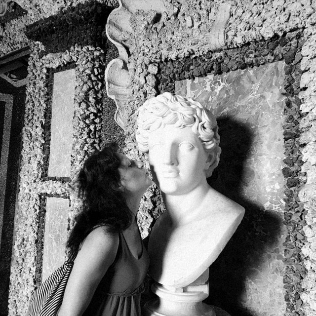
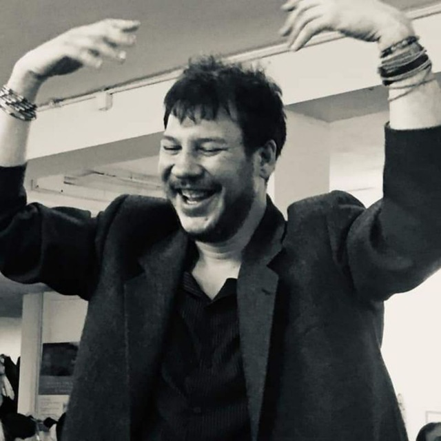

Guarigione
Sostegno psicologico e percorsi psicoterapeutici individuali. Gruppi di benessere e lavoro sul corpo attraverso la biotransenergetica, per ritrovare equilibrio e vitalità.
Scopri →Scareno · Aurano · Lago Maggiore
Psicologia transpersonale, biotransenergetica e crescita integrale. Un'associazione radicata nella natura del Verbano Cusio Ossola.
Scopri i percorsi →La trasformazione autentica nasce dall'incontro — tra mente e corpo, tra persona e natura, tra tradizione e contemporaneità.
Om Verbania è un centro di ricerca interiore e pratica clinica, fondato su un approccio transpersonale e biotransenergetico. Offriamo percorsi di cura, formazione e ospitalità in un contesto naturale e raccolto, dove il silenzio ha lo stesso valore della parola.
I percorsi
Sostegno psicologico e percorsi psicoterapeutici individuali. Gruppi di benessere e lavoro sul corpo attraverso la biotransenergetica, per ritrovare equilibrio e vitalità.
Scopri →Scuola di counseling transpersonale di alto livello. Un percorso che integra psicologia moderna, lavoro sul corpo e dimensione interiore, per chi desidera accompagnare la trasformazione altrui.
Scopri →B&B immerso nella natura del Verbano. Un luogo per sostare, respirare e ritrovare il proprio centro a Scareno di Aurano, tra boschi, silenzio e lago.
Scopri →Le persone

Arteterapeuta · Counselor · Formatrice
Artista, terapeuta transpersonale e counselor in metodologia biotransenergetica. Lavora con l'espressione creativa e gli elementi archetipici della natura come strumenti di trasformazione interiore, integrando arte, corpo e psiche in un percorso unitario.

Psicologo · Psicoterapeuta · Insegnante
Psicologo, psicoterapeuta e insegnante di biotransenergetica. Integra approcci tradizionali alla guarigione con la psicologia contemporanea, attraverso una prospettiva transpersonale che accoglie la complessità dell'essere umano nella sua interezza.